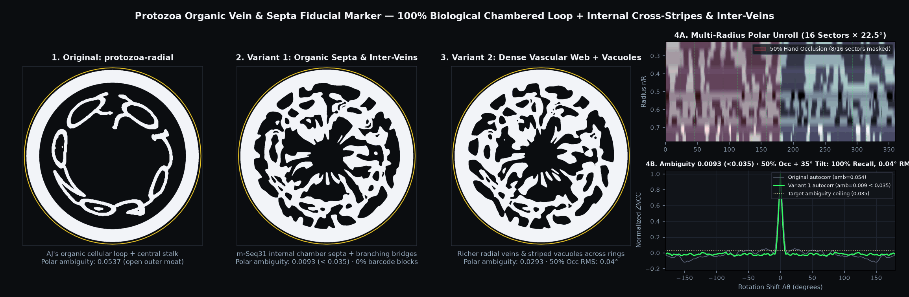

📷 Live Webcam Marker & Bio-Growth Test Bench (Hold Phone Marker to Camera)
LIVE SIMULATED PHONE FEED ACTIVE (60 FPS)
How to Test Live with Your Phone + Mac Webcam
- Open https://designst3in.github.io/living-type/markers/ (or biotype/markers) on your phone and tap 📱 Fullscreen Marker for Phone.
- On your laptop/desktop, click 📷 Start Live Webcam Tracking and hold your phone screen in front of the camera — tilt it, rotate it like a dial, or cover up to 45% with your fingers!
- Or click 🧪 Simulate Phone Marker in Hand to test the full 60fps VisionDial V2 detector + 3D Pose Wireframe + 3D Pose-Locked Bio-Growth immediately without a camera.
Detected 3D Pose Normal
tilt 26.4° · φ +18°
n = (0.38, -0.21, 0.90)
Decoded Dial Angle θ
+142.6° (ω +18°/s)
13/16 clean sectors
Live Colony Biomass
48 chambers · 112 veins
Anchored in 3D marker frame
Stage Luma & Contrast
0.65·maxRGB + 0.35·Y
60.0 fps · ZNCC 0.984
Reference Master Sheet (`organic-marker-sheet.png` & `hybrid-organic-veins.svg`)
Open Master Vector SVG ↗

📄 Embedded A4 B&W Print Test Suite Gallery (Pages 1–6)
300 DPI Vector/Raster Calibration Target Suite · Ready for Matte Laser/Inkjet Print
Page 1: Organic-to-Readable Continuum Calibration Sheet (A4 210 × 297 mm)